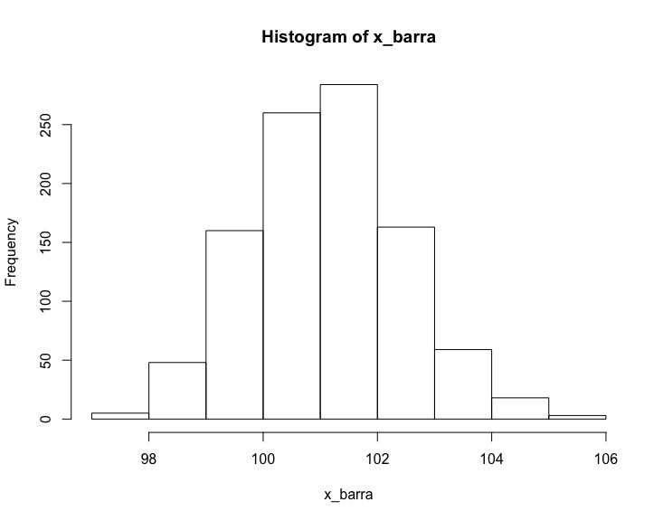

Capítulo 11 Incertidumbre en muestras de medias
El muestreo consiste en escoger los datos de algunos individuos de una población, llamada una muestra, para obtener información de toda la población a partir de ella. No es difícil darse cuenta que si tomo dos muestras de la misma población es muy poco probable obtener exactamente los mismos resultados. Incluso si lo hago perfectamente bien y no cometo ningún error, cada vez que tome una muestra obtendré resultados algo diferentes. La estadística nos permite cuantificar la incertidumbre asociada a un muestreo bien hecho. Esto se hace a través de los llamados intervalos de confianza. Veamos cómo se calcula el intervalo de confianza de una media de valores.
11.1 Una simulación
Empecemos por una simulación. Tenemos una población muy numerosa, potencialmente infinita, y medimos una característica numérica de cada uno de los individuos. Quizá la población es de fuentes de alimentación y medimos el voltaje de salida; o la población es de personas y la característica es la altura o el peso; o son años y la característica es la cantidad de lluvia caída en una estación meteorológica determinada. En nuestro caso vamos a recrear los datos tomados por el científico belga Adolphe Quetelet. Quetelet midió el perímetro torácico de 5738 soldados escoceses y encontró que se aproximaba muy bien a una distribución normal de media 101.1 cm y desviación típica 5,2 cm.
Hagamos una simulación con R. Empezamos por recrear los datos de
Quetelet. La hacemos a partir de rnorm. Usamos la función
set.seed() que nos permite establecer la “semilla” del
generador de números aleatorios. Así, aunque la secuencia sigue
siendo aleatoria, cada vez que ejecute el programa me saldrá la misma
secuencia. Esto significa que si ejecutan este script
deberían obtener exactamente los mismos resultados que los mostrados
aquí.
# Recreamos los datos de los 5738 soldados escoceses tomados por Quetelet.
# Medida de pecho: 101.1 cm de media y 5.2 cm de desviacion tipica. Usamos
# set.seed para poder reproducir valores aleatorios
set.seed(2101)
chest = rnorm(5738,101.1,5.2)
mu = mean(chest)La media de toda la población la representamos con una letra
griega, \(\mu\). En este caso, es \(\mu =\) 101.07, ligeramente diferente del 101.1 introducido en rnorm(). Vamos a coger ahora 1000
muestras diferentes, cada una de 15 individuos. Lo vamos a organizar
en una matriz donde cada columna es una muestra. No es necesario
coger las 1000 muestras una por una: basta coger los 15 000 valores de
golpe y organizarlos adecuadamente.
# Creamos 1000 muestras de 15 elementos
dt = sample(chest, 15000, replace = T)
muestras = matrix(dt, nrow = 15, ncol = 1000)Calculamos las medias de cada muestra. Como cada columna es una muestra, hemos de calcular las medias de las columnas. R tiene una función para esto:
## [1] 98.62854 102.12771 102.01141 102.89417 101.27689Vemos que los 5 primeros valores son 98.63, 102.13, 102.01, 102.89, 101.28.
Llamamos a cada una de las medias de las muestras “mu-techo” o “mu-gorro” y lo vamos a representar por \(\hat{\mu}\). A menudo se le representa con \(\bar{x}\), con la barra sobre la variable indicando que es una media. Esto es confuso, pues la variable poblacional es \(\mu\) y las de la muestra \(x\), y prefiero mantener la notación que las variables poblacionales sean letras griegas y los circunflejos indican que son valores de muestras.
El histograma de los \(\hat{\mu}\) de la simulación es

Camo en el caso de las proporciones, estamos interesados en el rango del 90% central de los datos. Hacemos lo mismo que entoneces: eliminamos el 5% más bajo y el 5% más alto y miramos el rango de lo que nos queda. Para ello ordenamos los \(\hat{\mu}\) y miramos el que está en la posición 50 y 950. Es prácticamente el mismo código que el usado en la sección anterior:
# Las ordenamos
mu_techo = sort(mu_techo)
# El 90% central
prob1 = 0.90
mu_techo[((1-prob1)/2)*1000]## [1] 98.85767## [1] 103.322En esta simulación en concreto obtenemos que el rango está entre 98.9 y 103.3. Es decir que si escogemos una muestra de las 1000 al azar, tenemos una probabilidad del 90% de que \(\hat{\mu}\) de esta muestra esté entre estos dos valores. Podemos escribirlo como \[P[98,9 \leq \hat{\mu} \leq 103,3] = 0.9\]
Como hemos creado este mundo, conocemos la media. Esto nos permite reescribir la expresión como \[P[101,07 - 98,95 = 2,11 \leq \hat{\mu} - \mu \leq 103,3 - 101,07 = 2,24] = 0.9\] Y esto nos permite escribir \[P[ \hat{\mu} - 2,11 \leq \mu \leq \hat{\mu} + 2,24] = 0.9\]
Es decir, que si cogemos una muestra al azar y medimos la proporción de esta muestra, \(\hat{\mu}\), tenemos una probabilidad de \(0.9\) de que \(\mu\), la media de la población total, esté \(2,11\) por debajo o \(2,24\) por encima de este valor.
Podemos repetir esto con cualquier probabilidad que queramos. Por ejemplo 0.8 o 0.95:
## [1] 99.35537## [1] 102.7825## [1] 98.51402## [1] 103.7399En estos casos obtenemos que hay una probabilidad de 0.8 de que la media de la población total \(\mu\) esté en \([99.35,\, 102.79]\) o, lo que es lo mismo, en \(\hat{\mu}\pm 0,045\). Y una probabilidad de \(0.95\) de que esté en \([98.51,\, 103.74]\) o, lo que es lo mismo, en \(\hat{\mu}\pm 2,61\).
Es importantísimo no olvidar que esto son probabilidades. Hay un buen número de muestras, perfectamente hechas y perfectamente válidas, que están fuera de nuestra horquilla. Además, en nuevas simulaciones obtendríamos valores diferentes. Estamos cuantificando la incertidumbre. Esa es la palabra clave: incertidumbre. Y la cuantificamos, no la eliminamos.
11.2 Intervalos de confianza
En nuestra simulación, nuestra creación, conocíamos \(\mu\) y esto nos permitía calcular la horquilla. Pero el caso real es que no conocemos \(\mu\). Precisamente tomamos la muestra para saber algo de \(\mu\). Para poder rigurosamente saber algo de \(\mu\) a partir de \(\hat{\mu}\) necesitamos el razonamiento matemático —casi análogo al hecho en el caso de las proporciones— que vamos a detallar.
Sea \(X\) una variable aleatoria que es el resultado de una medida numérica. De \(X\) no sabemos nada: no sabemos su distribución, no sabemos ni tan siquiera si es continua o discreta. Llamaremos \(\mu\) al valor esperado de \(X\), \(E[X] = \mu\), y \(\sigma\) a la desviación típica de \(X\), \(\sigma = \mbox{sd}[X]\).
Tomamos una muestra de \(n\) elementos. La muestra la tomamos de manera que las medidas sean independientes. Obtenemos así \(n\) valores de \(X\), todas independientes e idénticamente distribuidas, lo que llamábamos iid. La media de la muestra es \(\hat{\mu}\) y la desviación típica de la muestras es \(\hat{\sigma}\) (aquí si usamos el circunflejo). La media de la muestra, es otra variable aleatoria: \[\hat{\mu} = \frac{X + X + \cdots + X}{n}.\]
El valor esperado de \(\hat{\mu}\) es: \[E[\hat{\mu}] = E\left[\frac{X + X + \cdots + X}{n}\right] = \frac{E[X + X + \cdots + X]}{n} = \frac{n \, E[X]}{n} = \mu\]
Esto quiere decir que el valor medido, y conocido, \(\hat{\mu}\) va a estar alrededor de donde está nuestro desconocido \(\mu\). Es una buena noticia.
Calculemos ahora la desviación típica de \(\bar{X}\), la media de las variables aleatorias: \(\mbox{sd}[\bar{X}]\). Es la desviación típica de una suma de variables aleatorias, dividida por una constante: \[\begin{eqnarray*} \mbox{sd}[\bar{X}] & = & \mbox{sd}\left[\frac{X + X + \cdots + X}{n}\right]\\ & = & \frac{\mbox{sd}[X + X + \cdots + X]}{n}\\ & = & \frac{\sqrt{\sigma^2 + \sigma^2 + \cdots + \sigma^2}}{n}\\ & = & \frac{\sqrt{n \cdot \sigma^2}}{n} = \frac{\sigma}{\sqrt{n}} \end{eqnarray*}\]
Desgraciadamente esto no nos ayuda mucho. Hemos obtenido la desviación típica de \(\hat{\mu}\) en función de la desconocida \(\sigma\).
Para resolver este problema hacemos algo muy parecido a lo que hacíamos en el caso de las proporciones: calculamos la desviación típica de la muestra y definimos el error estándar de \(\hat{\mu}\), \(\mathrm{se}(\hat{\mu})\), como \[\mathrm{se}(\hat{\mu}) = \frac{\hat{\sigma}}{\sqrt{n}}\]
Es decir, el error estándar tiene la misma expresión que la desviación típica, pero sustituyendo la desconocida \(\sigma\) por la conocida \(\hat{\sigma}\).
Estamos en condiciones de volver a aplicar el teorema central del límite. Podemos establecer que \[\frac{\hat{\mu} - \mu}{\mathrm{se(}\hat{\mu})} \leadsto \mathrm{N}(0, 1)\] % Otra vez, cuanto mayor es \(n\) más cerca está la distribución de \((\hat{\mu} - \mu)/\mathrm{se}(\hat{\mu})\) de la normal de media 0 y desviación típica 1.
Sabiendo esto podemos recuperar la estrategia que usamos en la
simulación. Suponemos que \(n\) es lo suficientemente grande para que
podamos usar la normal N(0, 1) sin demasiado error. Como en la
simulación, nos interesa el rango del, digamos, 90% central de los
datos, “quitamos” de N(0, 1) el 5% del extremo inferior y el 5%
del extremo superior. Esto lo podemos hacer con R con la función
qnorm(). La instrucción sería qnorm(0.05, 0, 1)
para el inferior y qnorm(0.95, 0, 1) para el superior. Los
valores que obtenemos son \(-1,645\) y \(1,645\). Ahora podemos escribir:
\[P[-1,645 \leq \frac{\hat{\mu} - \mu}{\mathrm{se(}\hat{\mu})} \leq 1,645] =
0.9\]
lo que con un poco de álgebra se convierte en: \[P[\hat{\mu}-1,645\,\mathrm{se(}\hat{\mu}) \leq \mu \leq \hat{\mu} + 1,645\,\mathrm{se(}\hat{\mu})] = 0.9.\]
Es decir que hay una probabilidad de 0,9 de que el valor de toda la población, esa desconocida \(\mu\), esté a 1,645 veces el error estandar por encima o por debajo del \(\hat{\mu}\), el valor medido en nuestra muestra. Este es el Intervalo de Confianza de la media.
Naturalmente, podemos repetir esto para cualquier valor de probabilidad que nos interese. Lo hemos hecho con 0,9, pero lo podemos hacer con 0,8, 0,95, 0,7732… A esta probabilidad se le llama el nivel de confianza.
Un intervalo de confianza de medias a un nivel de confianza NC es el intervalo centrado en \(\hat{\mu}\) en el que se estima que estará la media de la población \(\mu\) con una probabilidad NC.
Algunas cuestiones a tener en cuenta. Estas son similares a las que teníamos en el caso de las proporciones:
Nadie asegura que \(\mu\) esté en el intervalo de confianza. Siempre hay una probabilidad de que esté fuera.
A la hora de calcular el intervalo estamos suponiendo que hemos tomado la muestra con todo rigor: de forma aleatoria, sin sesgos, etc. Si no es así, si la muestra está mal tomada, no significa que el intervalo es mayor, significa que no sabemos nada: puede ser mayor, puede ser menor, puede estar en otro lado.
Estamos suponiendo independencia.
Cuánto mayor es el nivel de confianza, mayor será el intervalo: si queremos estar más seguros que el valor de la población está en el intervalo, debemos hacerlo mayor.
Hay una cuestión específica al caso de intervalos de confianza de medias: ¿cómo de rápido se acerca \((\hat{\mu} - \mu)/\mathrm{se}(\hat{\mu})\) a la distribución normal? Esto depende mucho de la problematicidad de la población. Y requiere un apartado propio.
11.3 La distribución t de Student
No hemos puesto ninguna condición sobre la distribución de \(X\). Mientras nos aseguremos que los elementos de la muestra son independientes, puede ser cualquier cosa. Pero ya nos podemos imaginar que no va a dar lo mismo una distribución que otra. Aquí es donde entra en juego la problematicidad de la población. Distingamos varios casos, de menos problemáticos a más.
Caso 1: distribución normal. El primer caso es que \(X\)
sigue una distribución normal. En este caso se sabe exactamente cómo
se acerca \((\hat{\mu} - \mu)/\mathrm{se}(\hat{\mu})\) a la distribución
normal al aumentar \(n\). Esto lo recoge la distribución t de
Student. Esta distribución la desarrolló William S. Gosset mientras
trabajaba para la Guiness en el control de calidad de las cervezas.
Tenía prohibido por la empresa publicar nada (para guardar el secreto
industrial) y por eso usó un seudónimo: Student. La distribución t tiene un
único parámetro: los grados de libertad. Es un número mayor que 0 y
para el cálculo de los intervalos de confianza equivale a \(n-1\). A
medida que \(n\) aumenta, la distribución t se acerca a la normal N(0,
1) exactamente de la forma que queremos. Por lo tanto si \(X\) sigue
una distribución normal, usando la distribución t en vez de N(0, 1)
tenemos el intervalo de confianza de forma exacta y no aproximada
incluso para valores tan pequeños como \(n = 3\). Lo único que cambia en el
método de trabajo es que hemos de usar la función qt() en
vez de qnorm().
Caso 2: distribuciones de problematicidad baja. En caso de problematicidad baja, la distribución de \(\hat{\mu}\) se acerca a N(0, 1) bastante rápidamente. Seguimos usando la distribución t para mayor seguridad y se considera que con valores tan pequeños como \(n = 6\) la aproximación es buena.
Caso 3: distribuciones de problematicidad media. Si la problematicidad es media, porque es claramente asimétrica o tenemos algunos valores atípicos no muy extremos, podemos seguir usando el método descrito con la distribución t si cogemos \(n = 15\) o mayor. Pero la incertidumbre es mayor y no nos podemos fiar mucho de los resultados.
Caso 4: distribuciones de problematicidad alta. Si la problematicidad es alta, con distribuciones fuertemente asimetricas y valores atípicos extremos, nunca podemos sentirnos seguros. Podemos calcular el intervalo de confianza si las \(n\) son grandes (30, 50 o más) pero es por poder decir algo. La incertidumbre es demasiado alta para poder usar los resultados.
11.4 Fuga de probabilidades
Al igual que en el caso de las proporciones, puede darse el caso de tener un intervalo de confianza que incluya valores imposibles, por ejemplo pesos negativos. Es menos habitual que en el caso de las proporciones. Cuando se da, normalmente se trata el caso como si fuera de problemáticidad alta.
11.5 Un ejemplo
Queremos medir el peso de las galletas que entran en una bolsa en una fábrica artesanal. No tenemos aparatos de medida, sino que se meten galletas hasta que “esté llena”. Los datos parecen no ser problemáticos y por lo tanto cogemos el peso de 8 bolsas para hacer nuestra media. Los valores que obtenemos son:
443, 439, 466, 486, 462, 443, 494 y 476Calculamos la media y la distribución estándar de la muestra y obtenemos \[\hat{\mu} = 463.62; \qquad \hat{\sigma} = 20.85\]
El error estándar es \[\mathrm{se}(\hat{\mu}) = \frac{\hat{\sigma}}{\sqrt{n}} = \frac{20.85}{\sqrt{8}} = 7.37.\]
Queremos calcular el intervalo de confianza con niveles de confianza del 85% y 95%. Usamos la distribución t de Student con 7 grados de libertad para determinar los factores por los que hemos de multiplicar el error estándar. En R
## [1] 1.616592## [1] 2.364624Entonces el intervalo de confianza con un nivel de confianza del 85% es \[[463.62 - 7.37\cdot 1.617,\; 463.62 + 7.37\cdot 1.617] = [451.7,\; 475.5]\]
y con un nivel de confianza del 95% es \[[463.62 - 7.37\cdot 2.365,\; 463.62 + 7.37\cdot 2.365] = [446.2,\; 481.1]\]
11.6 Resumen
Sea \(\mu\) la media de toda una población de una variable de interés. Tomamos una muestra de tamaño \(n\), suficientemente grande. La muestra ha sido tomada con todo rigor. Llamamos \(\hat{\mu}\) a la media de la muestra de la variable de interés.
Un intervalo de confianza de medias a un nivel de confianza NC es el intervalo centrado en \(\hat{\mu}\) en el que se estima que estará la madia de la población \(\mu\) con una probabilidad NC.
Para calcular el intervalo de confianza debemos:
Estudiar la problematicidad de la distribución y escoger un tamaño de muestra adecuado si no es muy problemática. Si es muy problemática los resultados jamás serán suficientemente fiables.
Calcular \(\hat{\mu}\);
Calcular el error estándar \[\mathrm{se}(\hat{\mu}) = \frac{\hat{\sigma}}{\sqrt{n}}\]
Determinar el nivel de confianza NC que queremos para nuestro intervalo;
Calcular el factor \(\mathit{fc}\) para este nivel de confianza usando la distribución t. En R podemos usar la función
qt()}:fc = qt((1+nc)/2, n-1)};El intervalo de confianza para este nivel de confianza es \[ [\hat{\mu} - \mathit{fc}\cdot \mathrm{se}(\hat{\mu}), \; \hat{\mu} + \mathit{fc}\cdot \mathrm{se}(\hat{\mu})].\]